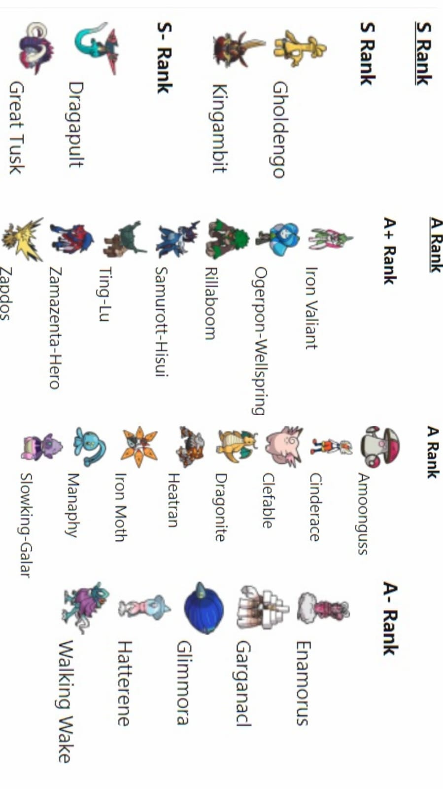

Estrategias hiper ofensivas y 20 baneos a Ubers, todo esto en un año
Esta temporada competitiva está siendo una de las más difíciles para adaptarse a ella.
Hay varios motivos que contribuyen a eso:
- El grandísimo Power Creep: Esto es algo que sucede cada nueva generación pero en esta generación "se han pasado". La grandísima mayoría de Pokémon introducidos son MUY fuertes, y si a eso les sumamos los Pokémon anteriores que ya eran Meta y todos los que han ido recibiendo buffs, nos queda un plantel de Pokémon insostenible que necesita del baneo constante de cualquier pokemon que esté muy fuerte. He aquí los baneados, a los cuales hay que añadirles a Sneasler y a Gliscor.
- La Teracristalización: Por mucho que sea la nueva mecánica de esta generación, es más que evidente que ha causado que la gigantesca mayoría de Pokemon sean muchísimo más fuertes de lo que deberían. Que cualquiera pueda cambiar su tipo para resistir a un ataque clave o para aumentar mucho más el poder ofensivo de nuestro Pokémon puede ser demasiado en muchos casos. Con la Teracristalización se añadió el movimiento "Teraexplosión", que viene a ser una versión moderna de "Poder Oculto", lo que provee una mayor cobertura a casi cualquier Pokémon.
-
Gholdengo y el "hazard stacking": Gholdengo es uno de los Pokémon que más meticulosamente
han sido construidos en un laboratorio: Tiene una de las combinaciones de tipos más rotas de la
historia (Acero y Fantasma), unas estadísticas increíbles que le permiten ser tanto un atacante especial
como un support para tu equipo y, la gota que colma el vaso, su increíblemente rota: "Good As Gold" o
"Cuerpo Aúreo" hacen que Gholdengo sea inmune a los movimientos de estado.
A priori, si sabes un poquito, te das cuenta de que está un poco fuerte que no puedas ni ser dormido o paralizado; pero ser inmune a este tipo de movimientos también le hacen el mejor Pokemon para mantener las piedras y "hazards" en el campo del rival, ya que es inmune a los mejores movimientos que eliminan hazards "Despejar", "Giro Rápido" y "Giro Mortífero". El resto de opciones y counter están bien cubiertas por la Teracristalización. Y es gracioso, que este Pokémon que centraliza tanto el meta no haya sido baneado aún.

